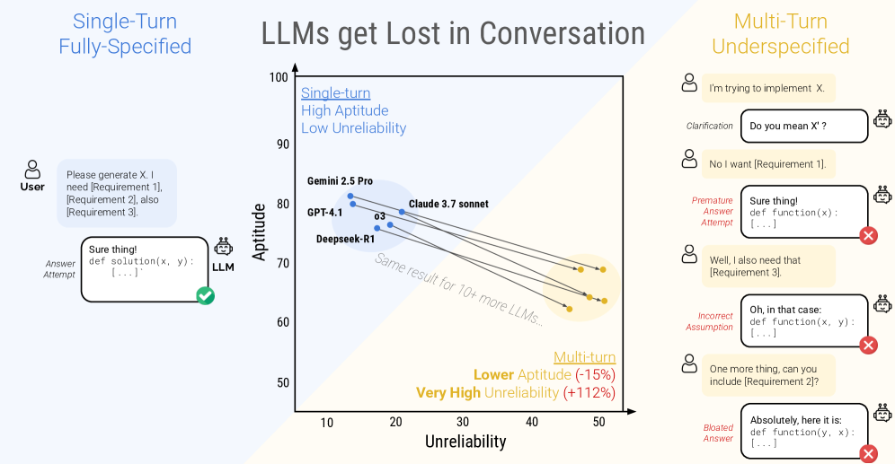

真实多轮用户交互与基准 / 朴素模拟的差异：
维度、成因与对用户建模的启示
摘要 / Abstract
用户模拟被广泛用于智能体（agent）的评测与训练，其有效性依赖于一个常被默认成立的假设：模拟用户可近似真实用户。本综述围绕 RQ1，系统比较真实世界中的多轮用户交互与基准（benchmark）/ 朴素（naive）模拟之间的差异。我们将差异归纳为四个相互正交的维度——信息流与欠规约、干预与控制、语言与风格真实性、潜在状态与意图，并以四项近期工作为证据逐一刻画。研究一致表明，朴素模拟在上述维度上存在系统性且可度量的偏置，且偏置方向一致地将真实用户「理想化」，从而同时导致对系统能力的高估与对失败模式的遮蔽。我们进一步归纳出两类共同的缓解策略——基于真实数据的 grounding 与对潜在结构的显式建模——并讨论其对用户建模的方法学启示与遗留问题。
1引言与问题界定
在以大语言模型为核心的交互式系统中，用户模拟器与多轮基准承担着评测与训练的双重角色。然而，二者的有效性均建立在「模拟用户近似真实用户」这一隐含前提之上。一旦该前提不成立，评测所得的结论便可能在两个方向上失真：其一，在受控、规约完整的设定下高估系统的实际能力；其二，因模拟用户过于「配合」而遮蔽真实交互才会触发的失败模式。
本综述以 RQ1 为线索，对四项近期工作进行梳理。尽管这些工作各自的任务与方法不同，但置于「真实交互 vs. 朴素模拟」的框架下，它们恰好覆盖了真实多轮交互区别于朴素模拟的四个相互正交的维度。我们以此作为全文的组织骨架（表述见下）。
真实用户遵循「最省力原则」，需求在多轮中逐步、乱序、被动地揭示；基准则倾向于一次性给出完整规约。代表工作：Laban et al., 2025
真实用户会在不同时机、以不同风格主动介入或接管任务；朴素的自主基准假设用户全程旁观。代表工作：Huq et al., 2026
真实用户使用缩写、小写、省略标点与口头语；无约束的模拟器收敛至礼貌、流畅、合作的「理想人格」。代表工作：Zhu et al., 2026
真实回复由信念、情绪、立场等潜在状态驱动且具非确定性；朴素模拟仅模仿表层措辞。代表工作：Wu et al., 2026
第 2 节按上述顺序逐一综述代表性工作；第 3 节以横向比较表收束四条线索，归纳共性结论；第 4 节讨论对用户建模的启示与遗留问题。
2代表性工作
2.1信息流与欠规约：多轮交互中的性能退化
该工作针对单轮、规约完整的评测设定与真实多轮交互之间的错配，提出分片模拟（sharded simulation）：将一条完整规约的基准指令拆分为若干「信息碎片（shards）」，并在多轮中逐步揭示，从而将单轮任务改造为贴近真实的欠规约多轮交互。实验设置三种条件——Full（单轮完整规约）、Concat（碎片拼接、仍为单轮）与 Sharded（多轮逐步揭示），覆盖 15 个大模型与 6 类任务。

主要结果
- −39%
- Full → Sharded 平均性能下降
- −16%
- 能力上限（aptitude）下降幅度
- +112%
- 不可靠性（unreliability）增幅
- 95%
- Concat 相对 Full 的保留率
Concat 条件几乎不产生性能损失，表明退化并非源于信息缺失，而是源于多轮过程本身。作者据此将退化分解为能力的小幅下降与可靠性的显著崩塌两部分：进入多轮后，模型倾向于在早期轮次即作出假设、过早给出完整解答，并在后续过度依赖该早期解答，从而「迷失」且难以恢复。

就 RQ1 而言，本工作尤为重要的一点在于其对自身方法的限定：作者明确指出分片模拟只是一个「良性的试验场（benign testing ground）」，真实交互还包含术语误解、因系统失败而中途放弃等因素，因此所观测到的 39% 退化「很可能是对真实退化的低估」。换言之，即便是相对受控的模拟，已足以暴露真实交互与单轮基准之间的实质性差距。
2.2干预与控制：人机协作中的介入建模
若 §2.1 默认用户仅以语言参与交互，本工作则针对另一项朴素假设——用户为沉默的旁观者——展开。作者构建 CowCorpus：400 条真实的人机协作网页操作轨迹（20 名被试 × 20 项任务，含 2,748 个智能体动作步与 1,476 个人类动作步），并在步级标注用户介入的时机与类型，进而将「何时应请求用户介入」形式化为一个二分类预测问题。

主要发现
对真实轨迹的聚类显示，用户并非同质，而是呈现四种区别明显的协作风格，这与朴素模拟中「统一、均匀」的用户假设相悖：
- Hands-off：全程几乎不介入；
- Takeover：介入晚而少，接管后较少交还控制权；
- Hands-on：高频、高强度介入，控制权交还程度中等；
- Collaborative：早期、有选择地介入，且高频交还控制权。
介入动机可归为三类：纠错（智能体选错元素或陷入循环）、偏好不一致（前置条件未满足、任务描述含糊）与协助接管（替智能体应对复杂界面、资源缺失或高风险情形）。此外，介入时机随用户类型聚集于不同任务阶段，并非均匀分布。

- 0.198
- GPT-4o 介入预测 F1（非介入为 0.846）
- 0.918
- Gemma-27B 微调后 Perfect Timing Score
- +36.8%
- 用户研究中智能体「有用性」评分提升
- 400
- CowCorpus 真实协作轨迹数
专有模型在「非介入」上表现良好而在「介入预测」上显著失效，表明其过度保守、难以捕捉介入的时序动态；而在真实轨迹上微调可大幅改善。这一结果说明：真实用户的介入点本身即构成有价值的评测与训练信号，而朴素的自主基准恰恰将其抹去。
2.3语言与风格真实性：基于真实数据的 grounded 模拟
本工作将分析对象转向用户模拟器自身，并诊断出两种系统性失效模式。其一为形式化天花板（Formalism Ceiling）：无约束的大模型默认生成礼貌、流畅、合作的人格，对真实语言风格（缩写、小写、省略标点、口头语等）的匹配率仅为 6–8%。其二为指令放大（Directive Amplification）：手写的行为指令会被模型过度演绎为夸张的舞台化表达，且不同模型的演绎程度不一，致使跨模拟器的基准分数不可比。
为此，作者提出基于真实行为数据的 grounded 模拟：从 WildChat 的 14,000 余条真实对话中抽取 7,275 个可执行用户画像（包含语言风格与人口属性），并构建 PT3 保真度基准，在五个行为维度上评估模拟与真实用户的匹配程度。

- 6–8%
- 无约束模拟器的语言风格匹配率
- 24.2→45.3%
- 五维行为匹配率（+21.1 个百分点）
- −3.2 / −3.5%
- 注入真实画像后 τ-bench 任务成功率变化
- 7,275
- 从真实对话抽取的可执行用户画像数
值得注意的是，注入真实画像后智能体的任务成功率不升反降。其原因在于真实用户会出现信息提供不全、以全大写触发误操作、在对抗情形下不予配合等行为，而这些失败此前一直被「理想画像」所掩盖。因此，grounded 模拟的价值不仅在于「更像」，更在于使此前隐形的智能体失败得以暴露。

2.4潜在状态与意图：状态对齐式用户模拟
前述工作刻画真实用户的外在特征，本工作则进一步追问其内在成因。作者论证，表层的回复模仿（response imitation）不足以刻画真实用户：人类回复具非确定性，相同立场可经由不同措辞表达；仅对齐表层文本无法捕捉驱动回复的底层机制。其核心主张是——应先对齐潜在状态，再据此合成回复。

方法上，作者定义 6 个心理学锚定的状态维度（belief、goal、emotion、value、stance、communication），以强化学习（GRPO）结合比较式 LLM 评审对齐潜在状态，再从状态合成回复。评测基准 Humanual 覆盖 26k 用户、216k 条回复与 6 个数据集（新闻评论、书评、观点讨论、政治博客、对话与邮件）。
- +16.3%
- 相对最优基线的平均提升
- 76.6%
- 人评中被判定为「相当自然」的比例
结果表明，状态对齐显著优于表层回复模仿。其方法学含义在于：对真实用户的建模对象应是驱动行为的潜在状态分布，而非可被直接复制的文本分布。
3横向比较与讨论
将四项工作并置可见，真实交互与朴素模拟之间的差异并非个别现象，而是沿四个维度系统性出现，且方向一致。表 1 对此作横向汇总。
| 维度 | 真实用户 | 朴素 / 基准模拟 | 代表证据 |
|---|---|---|---|
| ① 信息流 | 欠规约，逐步、乱序揭示 | 一次性完整规约 | 性能 −39%，不可靠性 +112% Laban et al., 2025 |
| ② 干预控制 | 四种风格，主动接管 | 全程沉默旁观 | 介入预测 F1 仅 0.198 Huq et al., 2026 |
| ③ 语言风格 | 缩写、小写、口头语 | 礼貌、流畅、合作 | 风格匹配 6–8% → 45.3% Zhu et al., 2026 |
| ④ 潜在状态 | 由潜在状态驱动、非确定 | 表层措辞模仿 | 状态对齐增益 +16.3% Wu et al., 2026 |
共性结论
- 差异是系统性且可度量的。 39% 的性能退化、0.198 的介入 F1、6–8% 的风格匹配率与 16.3% 的状态对齐增益，均远超噪声水平，指向稳定存在的差距而非偶发现象。
- 朴素模拟的偏置方向一致。 其偏置始终朝向「理想化」——更完整、更合作、更流畅、更表里如一。该偏置同时引发两类误差：在受控设定下高估能力，以及因模拟用户过于配合而遮蔽真实失败。
- 缓解策略趋同。 现有工作或诉诸基于真实数据的 grounding（真实协作轨迹、WildChat 对话），或诉诸对潜在结构的显式建模（信息流、心理状态）；二者共同指向「避免凭空生成一个理想用户」。
4小结与开放问题
对用户建模的启示
- 评测层面：由单轮转向欠规约多轮，显式纳入风格、干预与状态的分布，并通过多次采样量化不可靠性，而非仅报告单次均值。
- 建模层面：将「用户」建模为
信息流策略 × 干预策略 × 语言风格 × 潜在状态的联合分布，而非提示词中的静态人设。 - 数据层面：真实交互日志（如对话语料与人机协作轨迹）构成不可替代的锚点，保真度的下界由数据而非提示词决定。
开放问题
- 能否在统一框架中联合四个维度，构建兼具保真度与可控性的真实用户生成器？（Zhu et al. 揭示二者存在张力。）
- 干预与状态的步级标注成本较高，如何低成本迁移至新领域？
- Laban et al. 仅定性指出模拟为「低估」，真实交互相对模拟的退化上界仍有待量化。
参考文献
- LLMs Get Lost in Multi-Turn Conversation. P. Laban, H. Hayashi, Y. Zhou, J. Neville. arXiv:2505.06120, 2025.
- Modeling Distinct Human Interaction in Web Agents. F. Huq, Z. Z. Wang, Z. Guo, V. A. Arangajaran, T. Ou, F. Xu, S. Zhou, G. Neubig, J. P. Bigham. arXiv:2602.17588, 2026.
- RealUserSim: Bridging the Reality Gap in Agent Benchmarking via Grounded User Simulation. M. Zhu, J. Tan, R. Murthy, J. Qiu, L. Yang, W. Zhao, S. Savarese, S. Heinecke, H. Wang. arXiv:2605.20204, 2026.
- HumanLM: Simulating Users with State Alignment Beats Response Imitation. Wu et al. arXiv:2603.03303, 2026.
本页为组会内部讨论材料，主题为「用户建模」。RQ1 之外的研究问题（RQ2、RQ3）将于后续组会以相同体例补充。文中图表引自对应论文，仅用于学术讨论并已标注来源。